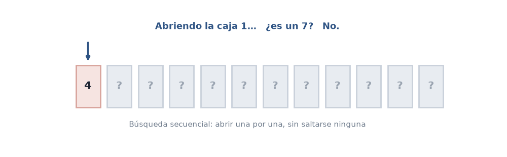
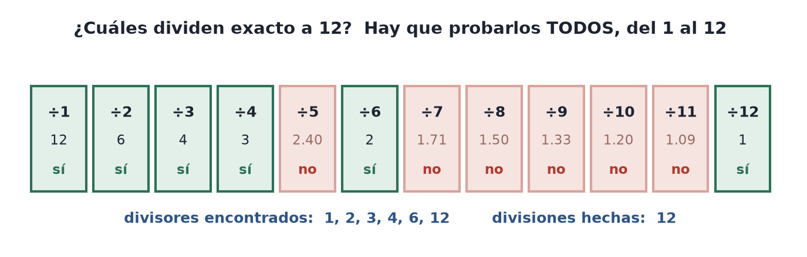
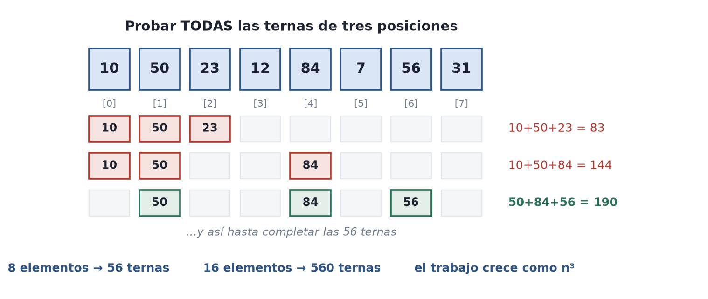
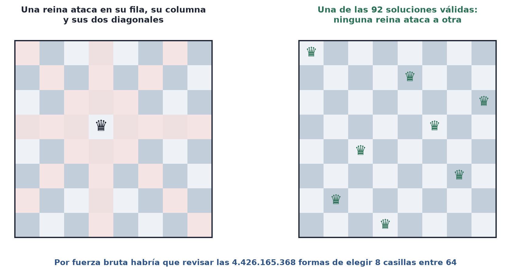
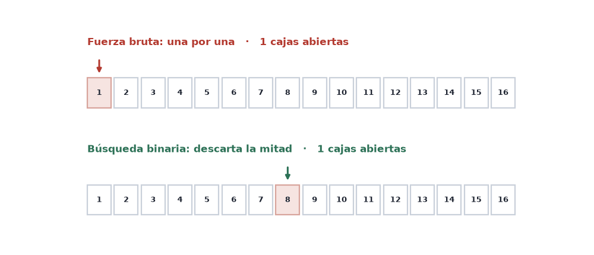

Fuerza bruta y complejidad#
Imagina 100 cajas cerradas. Cada una tiene adentro un número que no conoces. Te pido que encuentres la que contiene el 7.
¿Qué harías? Casi seguro pensaste lo mismo que todo el mundo: abrirlas una por una hasta encontrarlo. Y si llegas al final sin verlo, es que no estaba.
Esa estrategia tiene nombre, tiene ventajas, tiene un costo que se puede calcular, y es el punto de partida de toda la Unidad 2.
Tema |
|
|---|---|
1 |
El acertijo de las cajas |
2 |
Qué es la fuerza bruta |
3 |
La anatomía: sus cuatro partes |
4 |
Ejemplo: los divisores de un número |
5 |
Ejemplo: los tres mayores de una lista |
6 |
Ejemplo: las 8 reinas |
7 |
El momento incómodo: lo que la fuerza bruta no aprovecha |
8 |
Medir sin cronómetro: la notación Big O |
9 |
Las clases de complejidad |
10 |
Seis reglas para calcular la complejidad de un código |
11 |
Comprobarlo midiendo |
12 |
Ejercicios |
1. El acertijo de las cajas#


Fíjate en tres cosas de esa animación:
No se salta ninguna caja. Va en orden, sin atajos.
Se detiene apenas encuentra el 7, pero pudo haber tenido que abrirlas todas.
Si el 7 no estuviera, habría que abrir las 12 para poder afirmarlo.
Esa última es la clave: para decir “no está” con seguridad, hay que haber mirado todo.
Esto se llama búsqueda secuencial, y es el ejemplo más puro de un algoritmo de fuerza bruta.
def buscar_secuencial(cajas, objetivo):
"""Abre las cajas una por una. Retorna la posicion, o -1 si no esta."""
for i in range(len(cajas)):
if cajas[i] == objetivo:
return i
return -1
cajas = [4, 9, 1, 6, 3, 8, 2, 5, 7, 0, 11, 10]
print("El 7 esta en la posicion:", buscar_secuencial(cajas, 7))
print("El 99 esta en la posicion:", buscar_secuencial(cajas, 99))
El 7 esta en la posicion: 8
El 99 esta en la posicion: -1
¿Cuántas cajas abro?#
Depende de la suerte. Los tres escenarios tienen nombre:
Caso |
Dónde está el objetivo |
Cajas abiertas |
|---|---|---|
Mejor caso |
en la primera |
1 |
Caso promedio |
por la mitad |
\(n/2\) |
Peor caso |
en la última, o no está |
\(n\) |
Cuando analizamos algoritmos nos quedamos casi siempre con el peor caso. ¿Por qué? Porque es el único que nos da una garantía. Saber que “a veces es rápido” no sirve para prometerle nada a nadie.
def buscar_contando(cajas, objetivo):
"""Igual que antes, pero ademas reporta cuantas cajas abrio."""
abiertas = 0
for i in range(len(cajas)):
abiertas += 1
if cajas[i] == objetivo:
return i, abiertas
return -1, abiertas
print("objetivo 4 (primera) ->", buscar_contando(cajas, 4))
print("objetivo 10 (ultima) ->", buscar_contando(cajas, 10))
print("objetivo 99 (no esta) ->", buscar_contando(cajas, 99))
objetivo 4 (primera) -> (0, 1)
objetivo 10 (ultima) -> (11, 12)
objetivo 99 (no esta) -> (-1, 12)
2. Qué es la fuerza bruta#
Un algoritmo de fuerza bruta resuelve un problema probando todas las posibilidades, una por una, hasta encontrar la que sirve.
Suele ser la traducción literal del enunciado a código. Si el problema dice “encuentra el mayor”, el algoritmo de fuerza bruta mira todos y se queda con el mayor. Nada más.
Lo bueno#
Siempre encuentra la respuesta |
Si la solución existe, la va a hallar. Probó todas. |
Es fácil de escribir |
No hay que ser ingenioso. Se programa casi dictándolo. |
Sirve de punto de partida |
Te obliga a entender el problema y a ver qué se repite. |
Lo malo#
Es ingenua |
No aprovecha información que podría ahorrarle trabajo. |
Puede ser lentísima |
Si hay mil millones de posibilidades, las prueba todas. |
Important
Fuerza bruta no significa “mal programado”. Significa “probar todo”. Para problemas pequeños suele ser la decisión correcta: es más fácil de escribir, más fácil de leer y más difícil de equivocarse. El problema aparece cuando el número de posibilidades crece.
3. La anatomía: sus cuatro partes#
Todo algoritmo de fuerza bruta, por distinto que parezca, tiene las mismas cuatro piezas:
Pieza |
Qué es |
En el acertijo de las cajas |
|---|---|---|
Candidatos |
todas las posibilidades a probar |
las 12 cajas |
Función siguiente |
cómo paso al próximo candidato |
|
Función válido |
cómo sé si este candidato sirve |
|
Conjunto solución |
dónde guardo lo que encontré |
|
Reconocer estas cuatro piezas te sirve para escribir un algoritmo de fuerza bruta desde cero: si puedes responder las cuatro preguntas, ya lo tienes.
# La plantilla, con las cuatro piezas marcadas
def fuerza_bruta(candidatos, es_valido):
solucion = [] # 4) conjunto solucion
for candidato in candidatos: # 2) funcion siguiente
if es_valido(candidato): # 3) funcion valido
solucion.append(candidato)
return solucion
numeros = range(1, 31) # 1) candidatos
multiplos = fuerza_bruta(numeros, lambda x: x % 7 == 0)
print("Multiplos de 7 entre 1 y 30:", multiplos)
print("Se evaluaron", len(list(numeros)), "candidatos para encontrar", len(multiplos))
Multiplos de 7 entre 1 y 30: [7, 14, 21, 28]
Se evaluaron 30 candidatos para encontrar 4
4. Ejemplo: los divisores de un número#
Encontrar todos los divisores de un número n. La traducción literal: probar todos los números
del 1 al n y quedarse con los que dividen exacto.
def divisores(n):
"""Fuerza bruta: probar TODOS los numeros del 1 al n."""
encontrados = []
for d in range(1, n + 1):
if n % d == 0:
encontrados.append(d)
return encontrados
print("divisores(4) =", divisores(4))
print("divisores(12) =", divisores(12))
print("divisores(97) =", divisores(97), " <- es primo")
divisores(4) = [1, 2, 4]
divisores(12) = [1, 2, 3, 4, 6, 12]
divisores(97) = [1, 97] <- es primo


Así se ve el trabajo completo para n = 12: doce divisiones, una por cada candidato, y solo
seis resultaron ser divisores. La fuerza bruta no puede saber de antemano cuáles van a servir.
El detalle que hay que notar#
Para n = 4 hicimos 4 divisiones. Para n = 97 hicimos 97. Ahora mira qué pasa cuando el
número crece de a un dígito:
for digitos in range(1, 8):
n = 10 ** digitos - 1 # 9, 99, 999, 9999, ...
print(f"{digitos} digitos -> el peor numero es {n:>9,} -> {n:>9,} divisiones")
1 digitos -> el peor numero es 9 -> 9 divisiones
2 digitos -> el peor numero es 99 -> 99 divisiones
3 digitos -> el peor numero es 999 -> 999 divisiones
4 digitos -> el peor numero es 9,999 -> 9,999 divisiones
5 digitos -> el peor numero es 99,999 -> 99,999 divisiones
6 digitos -> el peor numero es 999,999 -> 999,999 divisiones
7 digitos -> el peor numero es 9,999,999 -> 9,999,999 divisiones
Agregar un solo dígito multiplica el trabajo por diez. No lo aumenta un poquito: lo multiplica.
Con 7 dígitos ya son casi diez millones de divisiones para un solo número. Con 15 dígitos, el programa no termina nunca en tu vida.
Note
Este algoritmo sí se puede mejorar: basta probar hasta la raíz cuadrada de n, porque los
divisores vienen en parejas. Pero eso ya no es fuerza bruta: es usar información sobre el
problema. Volveremos a esta idea en la sección 7.
5. Ejemplo: los tres mayores de una lista#
Dada una lista de números, encontrar los tres más grandes. Resolvámoslo por fuerza bruta pura: probar todas las combinaciones posibles de tres posiciones y quedarse con la que sume más.
Para arrancar usamos una técnica con nombre propio: “mi peor es nada”. Antes de mirar nada, declaramos que los tres mayores son los tres primeros. Es casi seguro que está mal, pero nos da algo con qué comparar.
def tres_mayores(arr):
"""Fuerza bruta: probar TODAS las ternas posibles. Tres ciclos anidados."""
mejor = [arr[0], arr[1], arr[2]] # "mi peor es nada"
suma_mejor = sum(mejor)
comparaciones = 0
for i in range(len(arr)):
for j in range(i + 1, len(arr)):
for k in range(j + 1, len(arr)):
comparaciones += 1
terna = [arr[i], arr[j], arr[k]]
if sum(terna) > suma_mejor:
mejor, suma_mejor = terna, sum(terna)
return mejor, comparaciones
datos = [10, 50, 23, 12, 84, 7, 56, 31]
resultado, comps = tres_mayores(datos)
print("Lista:", datos)
print("Los tres mayores:", sorted(resultado, reverse=True))
print("Ternas evaluadas:", comps)
Lista: [10, 50, 23, 12, 84, 7, 56, 31]
Los tres mayores: [84, 56, 50]
Ternas evaluadas: 56


Cada fila de abajo es una terna candidata. Los tres ciclos anidados las van generando todas —
(0,1,2), (0,1,3), (0,1,4)… — y se quedan con la de mayor suma. Con ocho elementos son 56
ternas; el algoritmo las mira todas, incluso después de haber encontrado la buena.
Tres ciclos anidados. Ese es el síntoma: por cada elemento, recorremos los demás, y por cada par, recorremos los demás otra vez. Veamos cómo escala:
import random
print(f"{'n':>5} {'ternas evaluadas':>18} {'n al cubo':>14}")
for n in [8, 16, 32, 64, 128]:
arr = [random.randint(1, 1000) for _ in range(n)]
_, comps = tres_mayores(arr)
print(f"{n:>5} {comps:>18,} {n**3:>14,}")
n ternas evaluadas n al cubo
8 56 512
16 560 4,096
32 4,960 32,768
64 41,664 262,144
128 341,376 2,097,152
El número de ternas crece como el cubo de n. Duplicar la lista no duplica el trabajo: lo multiplica por ocho.
Tip
¿Cómo lo resolverías sin fuerza bruta? Ordenando la lista y tomando los tres últimos. Mucho más rápido. Pero fíjate en lo que tuvimos que saber para llegar ahí: que ordenar ayuda. La fuerza bruta no sabe eso; solo prueba.
6. Ejemplo: las 8 reinas#
Este es el clásico, y es donde la fuerza bruta se rompe.
En un tablero de ajedrez de 8×8 hay que poner 8 reinas de forma que ninguna ataque a otra. Una reina ataca en su fila, en su columna y en las dos diagonales.
Por fuerza bruta pura: probar todas las formas de elegir 8 casillas entre 64 y revisar cada una. ¿Cuántas son?


A la izquierda, por qué el problema es difícil: una sola reina domina su fila, su columna y las dos diagonales. A la derecha, una colocación que sí funciona — hay 92 en total.
El trabajo de la fuerza bruta es encontrar esas 92 probando todas las colocaciones posibles.
from math import comb
combinaciones = comb(64, 8) # elegir 8 casillas de 64
print(f"Formas de poner 8 reinas en 64 casillas: {combinaciones:,}")
print()
# Suponiendo una computadora que revise un millon de tableros por segundo
por_segundo = 1_000_000
segundos = combinaciones / por_segundo
print(f"A un millon de tableros por segundo: {segundos:,.0f} segundos")
print(f"Es decir, {segundos/60:,.1f} minutos ({segundos/3600:,.2f} horas)")
Formas de poner 8 reinas en 64 casillas: 4,426,165,368
A un millon de tableros por segundo: 4,426 segundos
Es decir, 73.8 minutos (1.23 horas)
Cuatro mil cuatrocientos millones de tableros para un problema que cabe en una hoja.
Y eso es solo con 8 reinas en un tablero de 8×8. Mira qué pasa si el tablero crece:
from math import comb
print(f"{'tablero':>10} {'casillas':>10} {'reinas':>8} {'combinaciones':>24}")
for lado in [4, 6, 8, 10, 12]:
casillas = lado * lado
print(f"{lado}x{lado:<7} {casillas:>10} {lado:>8} {comb(casillas, lado):>24,}")
tablero casillas reinas combinaciones
4x4 16 4 1,820
6x6 36 6 1,947,792
8x8 64 8 4,426,165,368
10x10 100 10 17,310,309,456,440
12x12 144 12 103,619,293,824,707,388
En un tablero de 12×12 son más de mil billones de combinaciones. Ninguna computadora del mundo termina eso.
Important
Este es el límite de la fuerza bruta. No es que esté mal escrita: es que el número de posibilidades crece más rápido de lo que cualquier máquina puede recorrer. Cuando llegues a este punto, el camino no es comprar un computador más rápido — es cambiar de técnica.
Ese cambio de técnica se llama backtracking, y es el tema que sigue en la unidad. Con él, las 8 reinas se resuelven en milisegundos.
7. El momento incómodo#
Volvamos a las cajas. Pero ahora te doy un dato extra: los números están ordenados de menor a mayor.
¿Sigues abriendo una por una?


Arriba, la fuerza bruta: caja 1, caja 2, caja 3… Abajo, otra estrategia: abrir la del medio. Si el número buscado es mayor, toda la mitad izquierda se descarta de un golpe. Y se repite.
Esa es la diferencia. La fuerza bruta no usa el dato de que están ordenados. Es ingenua —en inglés se dice naive— no porque sea tonta, sino porque ignora información disponible.
def busqueda_lineal(arr, objetivo):
pasos = 0
for i in range(len(arr)):
pasos += 1
if arr[i] == objetivo:
return i, pasos
return -1, pasos
def busqueda_binaria(arr, objetivo):
"""Aprovecha que la lista esta ORDENADA: descarta la mitad en cada paso."""
pasos = 0
lo, hi = 0, len(arr) - 1
while lo <= hi:
pasos += 1
medio = (lo + hi) // 2
if arr[medio] == objetivo:
return medio, pasos
if arr[medio] < objetivo:
lo = medio + 1
else:
hi = medio - 1
return -1, pasos
# Comprobamos primero que las dos encuentran lo mismo
pequena = list(range(100))
print("lineal :", busqueda_lineal(pequena, 99))
print("binaria:", busqueda_binaria(pequena, 99))
print()
# Para los tamanos grandes usamos range(n), que NO ocupa memoria:
# se puede indexar igual que una lista. El peor caso de la lineal es
# abrir las n cajas, asi que no hace falta ejecutarla para saberlo.
print(f"{'n':>14} {'lineal (peor caso)':>20} {'binaria':>10}")
for n in [100, 10_000, 1_000_000, 100_000_000]:
ordenada = range(n)
_, pasos_bin = busqueda_binaria(ordenada, n - 1)
print(f"{n:>14,} {n:>20,} {pasos_bin:>10,}")
lineal : (99, 100)
binaria: (99, 7)
n lineal (peor caso) binaria
100 100 7
10,000 10,000 14
1,000,000 1,000,000 20
100,000,000 100,000,000 27
Con cien millones de cajas ordenadas, la fuerza bruta tendría que abrir cien millones. La binaria abre 27.
Note
Pero ojo: la binaria solo funciona si están ordenadas. Si no lo están, la fuerza bruta es la única opción. Por eso no se trata de que una sea “mejor”: se trata de qué información tienes. La fuerza bruta es la que funciona cuando no sabes nada.
8. Medir sin cronómetro: la notación Big O#
Hasta aquí hemos contado pasos a mano. Necesitamos una forma de hablar de esto que no dependa del computador en el que corras el programa.
La analogía de los libros#
Tienes que llevarle libros a un amigo que vive a una cuadra. Dos métodos:
Método |
1 libro |
10 libros |
100 libros |
|---|---|---|---|
En carro: los metes todos y manejas |
5 min |
5 min |
5 min |
Corriendo: un libro por viaje |
3 min |
30 min |
300 min |
El carro no cambia con la cantidad: siempre 5 minutos. Eso es tiempo constante. Corriendo, el tiempo crece en proporción a los libros. Eso es tiempo lineal.
Fíjate en que la pregunta no es “¿cuántos minutos?” sino “¿cómo cambia cuando la entrada crece?”. Esa es exactamente la pregunta que responde la notación Big O.
Big O describe cómo crece el trabajo de un algoritmo cuando la entrada se hace grande, en el peor de los casos.
Método |
En Big O |
|---|---|
En carro |
\(O(1)\) |
Corriendo |
\(O(n)\) |
Tip
Big O ignora los detalles: no le importa si el carro tarda 5 minutos o 50, ni si tu computador es más rápido que el mío. Solo le importa la forma en que crece. Por eso se descartan las constantes: \(O(5n)\) y \(O(n)\) son lo mismo.
9. Las clases de complejidad#
Juega con este gráfico antes de seguir. Al principio solo se ve la roja, \(O(2^n)\): crece tanto que aplasta a todas las demás contra el eje. Haz clic en su etiqueta para ocultarla y mira lo que pasa — el eje se reajusta y aparecen las otras. Quita también \(O(n^2)\) y vuelve a mirar.
Esa es justamente la idea: cada complejidad aplasta a la anterior. Para ver el detalle de las pequeñas hay que sacar a las grandes del gráfico.
Complejidad |
Nombre |
Típicamente aparece en |
Con n = 1000 |
|---|---|---|---|
\(O(1)\) |
constante |
acceder a |
1 |
\(O(\log n)\) |
logarítmica |
búsqueda binaria |
~10 |
\(O(n)\) |
lineal |
un ciclo que recorre la entrada |
1 000 |
\(O(n \log n)\) |
cuasilineal |
los buenos algoritmos de ordenamiento |
~10 000 |
\(O(n^2)\) |
cuadrática |
dos ciclos anidados |
1 000 000 |
\(O(n^3)\) |
cúbica |
tres ciclos anidados |
1 000 000 000 |
\(O(2^n)\) |
exponencial |
probar todos los subconjuntos |
un número de 302 cifras |
La última fila no es una exageración. Vamos a verla:
import math
n = 1000
tabla = [("O(1)", 1), ("O(log n)", math.log2(n)), ("O(n)", n),
("O(n log n)", n * math.log2(n)), ("O(n^2)", n**2), ("O(n^3)", n**3)]
for etiqueta, valor in tabla:
print(f"{etiqueta:>12} -> {valor:>20,.0f} operaciones")
print(f"{'O(2^n)':>12} -> un numero de {len(str(2**n))} cifras")
O(1) -> 1 operaciones
O(log n) -> 10 operaciones
O(n) -> 1,000 operaciones
O(n log n) -> 9,966 operaciones
O(n^2) -> 1,000,000 operaciones
O(n^3) -> 1,000,000,000 operaciones
O(2^n) -> un numero de 302 cifras
10. Seis reglas para calcular la complejidad#
Para analizar un código no hay que ejecutarlo. Se lee, y se aplican estas seis reglas.
Regla 1 · Una instrucción simple es \(O(1)\)#
Asignar, sumar, comparar, imprimir, acceder a lista[i]. Da igual cuánto valga n: siempre cuesta
lo mismo.
Regla 2 · Un ciclo que recorre la entrada es \(O(n)\)#
Si avanza de a pasos constantes —de 1 en 1, de 2 en 2— y recorre los n elementos.
Regla 3 · Los ciclos anidados se multiplican#
Dos ciclos anidados sobre la entrada dan \(O(n \times n) = O(n^2)\). Tres dan \(O(n^3)\).
Regla 4 · Si la variable se multiplica o divide, es \(O(\log n)\)#
i = i * 2 no recorre n valores: recorre los que caben duplicando. Para llegar a 1000 desde 1
duplicando solo hacen falta 10 pasos.
Regla 5 · En un if, se toma la peor rama#
Big O mide el peor caso. Si una rama hace más trabajo que la otra, esa es la que cuenta.
Regla 6 · Al final se simplifica#
Se suma todo, se descartan las constantes y se deja solo el término que más crece:
¿Por qué? Porque cuando n es grande, \(n^2\) aplasta a todo lo demás. Con n = 1000:
\(n^2 = 1\,000\,000\) y \(5n + 10 = 5\,010\). El segundo ni se nota.
Analicemos este código juntos#
def ejemplo(datos):
total = 0 # 1 vez -> O(1)
for x in datos: # n veces -> O(n)
total += x # dentro: O(1)
for i in range(len(datos)): # n veces
for j in range(len(datos)): # n veces cada una
if datos[i] == datos[j]: # dentro: O(1)
total += 1 # -> en total O(n * n) = O(n^2)
i = 1
while i < len(datos): # se duplica -> O(log n)
i = i * 2
return total # 1 vez -> O(1)
Sumamos lo que encontramos:
Aplicamos la regla 6: nos quedamos con el término que más crece. El ganador es \(n^2\).
Warning
El error más común es sumar los ciclos anidados en vez de multiplicarlos. Dos ciclos uno después del otro se suman: \(O(n) + O(n) = O(2n) = O(n)\). Dos ciclos uno dentro del otro se multiplican: \(O(n \times n) = O(n^2)\). La indentación es la que decide.
# Dos ciclos SEGUIDOS -> O(n) + O(n) = O(n)
def seguidos(datos):
pasos = 0
for x in datos:
pasos += 1
for x in datos:
pasos += 1
return pasos
# Dos ciclos ANIDADOS -> O(n) * O(n) = O(n^2)
def anidados(datos):
pasos = 0
for x in datos:
for y in datos:
pasos += 1
return pasos
for n in [10, 100, 1000]:
datos = list(range(n))
print(f"n={n:>5} seguidos: {seguidos(datos):>10,} anidados: {anidados(datos):>10,}")
n= 10 seguidos: 20 anidados: 100
n= 100 seguidos: 200 anidados: 10,000
n= 1000 seguidos: 2,000 anidados: 1,000,000
11. Comprobarlo midiendo#
La teoría dice que si duplicas n, un algoritmo \(O(n)\) tarda el doble y uno \(O(n^2)\) tarda
cuatro veces más. Vamos a verificarlo con un cronómetro de verdad.
import time
def medir(funcion, datos):
"""Mide cuanto tarda una funcion, en milisegundos."""
inicio = time.perf_counter()
funcion(datos)
return (time.perf_counter() - inicio) * 1000
print(f"{'n':>7} {'O(n) ms':>10} {'factor':>8} {'O(n^2) ms':>11} {'factor':>8}")
anterior_lineal = anterior_cuad = None
for n in [500, 1000, 2000, 4000]:
datos = list(range(n))
t_lineal = medir(seguidos, datos)
t_cuad = medir(anidados, datos)
f1 = f"{t_lineal/anterior_lineal:.1f}x" if anterior_lineal else "-"
f2 = f"{t_cuad/anterior_cuad:.1f}x" if anterior_cuad else "-"
print(f"{n:>7} {t_lineal:>10.2f} {f1:>8} {t_cuad:>11.2f} {f2:>8}")
anterior_lineal, anterior_cuad = t_lineal, t_cuad
n O(n) ms factor O(n^2) ms factor
500 0.01 - 2.43 -
1000 0.02 2.0x 10.80 4.4x
2000 0.04 2.1x 36.99 3.4x
4000 0.07 1.8x 150.77 4.1x
Mira la columna factor: cada vez que n se duplica, el lineal tarda alrededor de 2 veces
más y el cuadrático alrededor de 4 veces más. Exactamente lo que predice la teoría.
Note
Los tiempos exactos cambian en cada computador y en cada corrida. Lo que no cambia son los factores: 2× y 4×. Por eso Big O habla de cómo crece, no de cuántos milisegundos tarda.
12. Ejercicios#
En clase#
Ejercicio 1 — ¿Cuál es la complejidad?#
Para cada función, sin ejecutarla, di su complejidad en notación Big O y justifica en una línea qué regla aplicaste.
# a)
def a(datos):
return datos[0] + datos[-1]
# b)
def b(datos):
total = 0
for x in datos:
total += x
return total
# c)
def c(datos):
pares = []
for x in datos:
for y in datos:
pares.append((x, y))
return pares
# d)
def d(n):
i = 1
pasos = 0
while i < n:
i = i * 3
pasos += 1
return pasos
# e)
def e(datos):
total = 0
for x in datos:
total += x
for i in range(len(datos)):
for j in range(len(datos)):
total += 1
return total
# TUS RESPUESTAS ACÁ (a, b, c, d, e con su justificación)
Ejercicio 2 — El número perdido#
Te dan una lista con los números del 1 al n, en desorden y con uno faltante.
Escribe
buscar_faltante_fuerza_bruta(lista, n)que, para cada número del 1 aln, revise si está en la lista. Usa dos ciclos anidados: no uses el operadorin.Haz que además cuente y retorne cuántas comparaciones hizo.
Pruébala con
n = 10,n = 100yn = 200, e imprime las comparaciones de cada una.Di cuál es su complejidad y comprueba con los números si el crecimiento corresponde.
# TU CÓDIGO VA ACÁ
Para la casa#
Ejercicio 3 — El par que suma#
Dada una lista de números y un objetivo, encontrar si existen dos números de la lista que sumen el objetivo.
Resuélvelo por fuerza bruta: probar todos los pares posibles. Retorna la pareja y el número de pares evaluados.
Pruébalo con
[3, 8, 1, 6, 9, 4]y objetivo10, y con una lista de 200 números al azar.Di cuál es su complejidad y explica por qué, mencionando la regla que usaste.
Para pensar, sin programar: si la lista estuviera ordenada, ¿se te ocurre una forma de hacerlo con menos trabajo? Descríbela en palabras.
Ejercicio 4 — La contraseña corta#
Un candado tiene una clave de k dígitos (cada uno del 0 al 9).
Escribe una función que, por fuerza bruta, pruebe todas las claves posibles hasta dar con una clave objetivo. Retorna cuántos intentos hizo. Pista:
itertools.product("0123456789", repeat=k)genera todas las combinaciones.Pruébala con
k = 1, 2, 3, 4usando como objetivo la última clave posible (el peor caso) e imprime los intentos de cada una.¿Cuántos intentos hay en el peor caso para
kdígitos? Escribe la fórmula.Si cada intento tardara 1 milisegundo, ¿cuánto tardaría romper una clave de 8 dígitos? Calcúlalo con código y exprésalo en días.
Ejercicio 5 — Ordenar por fuerza bruta#
El selection sort es fuerza bruta: para cada posición, busca el menor de todo lo que queda y lo pone ahí.
Impleméntalo, contando cuántas comparaciones hace.
Pruébalo con listas de 50, 100 y 200 elementos al azar e imprime las comparaciones.
Verifica que el resultado coincide con
sorted(lista).Di cuál es su complejidad. Luego compara los números medidos con \(n^2/2\) y explica por qué se parecen tanto.
# EJERCICIO 3 — TU CÓDIGO VA ACÁ
# EJERCICIO 4 — TU CÓDIGO VA ACÁ
# EJERCICIO 5 — TU CÓDIGO VA ACÁ
Para cerrar#
Tres ideas para llevarse:
La fuerza bruta prueba todo. Siempre encuentra la respuesta y es fácil de escribir. Es un punto de partida legítimo, no un error.
Su costo se puede calcular leyendo el código. Un ciclo es \(O(n)\); dos anidados, \(O(n^2)\); probar todas las combinaciones, exponencial.
Deja de servir cuando las posibilidades explotan. Ahí no se cambia de computador: se cambia de técnica. Eso es lo que viene en la unidad.